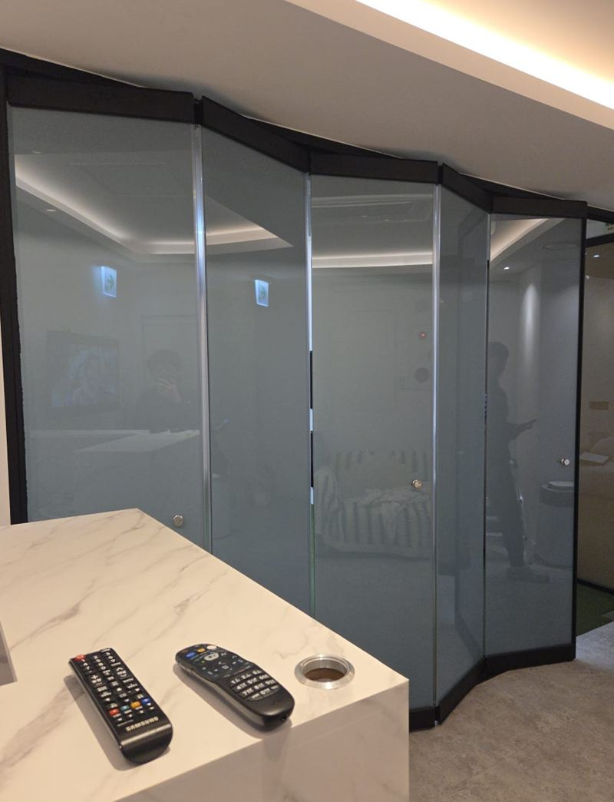
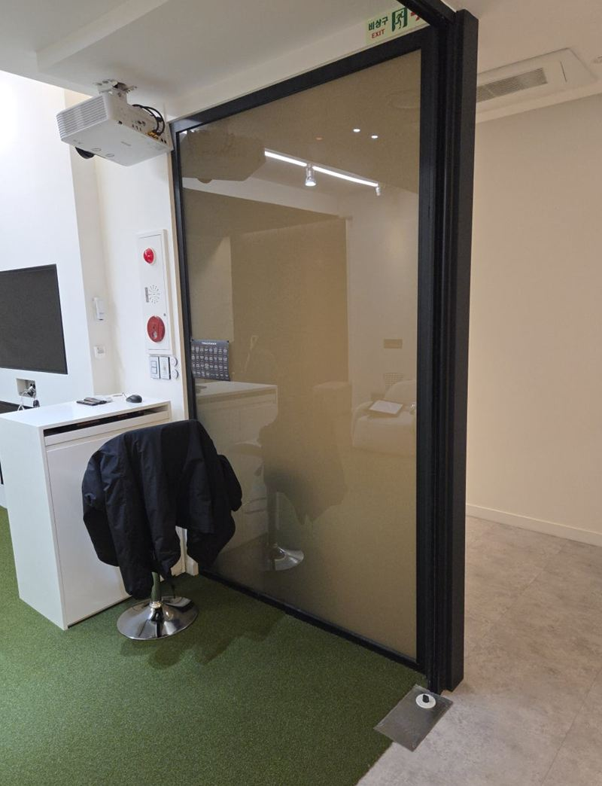
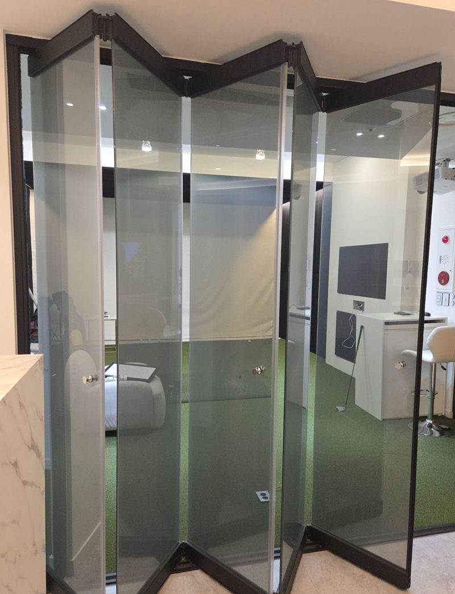
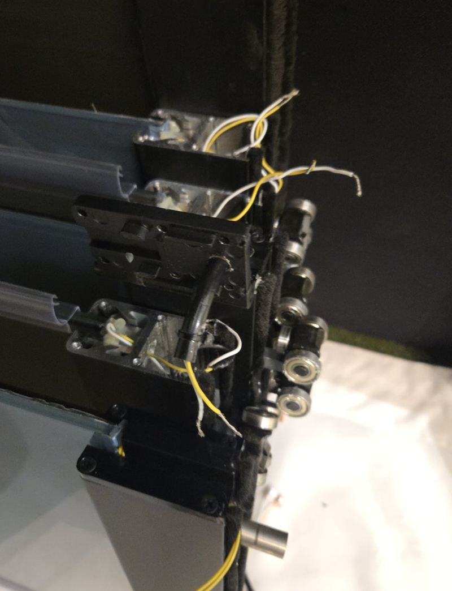
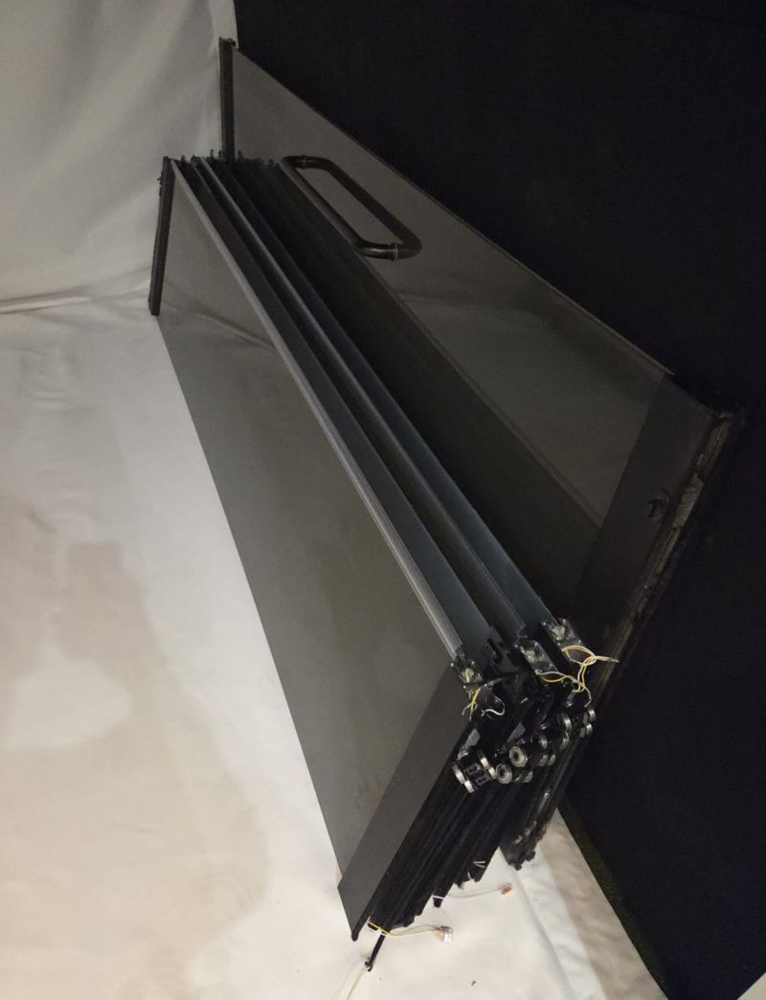
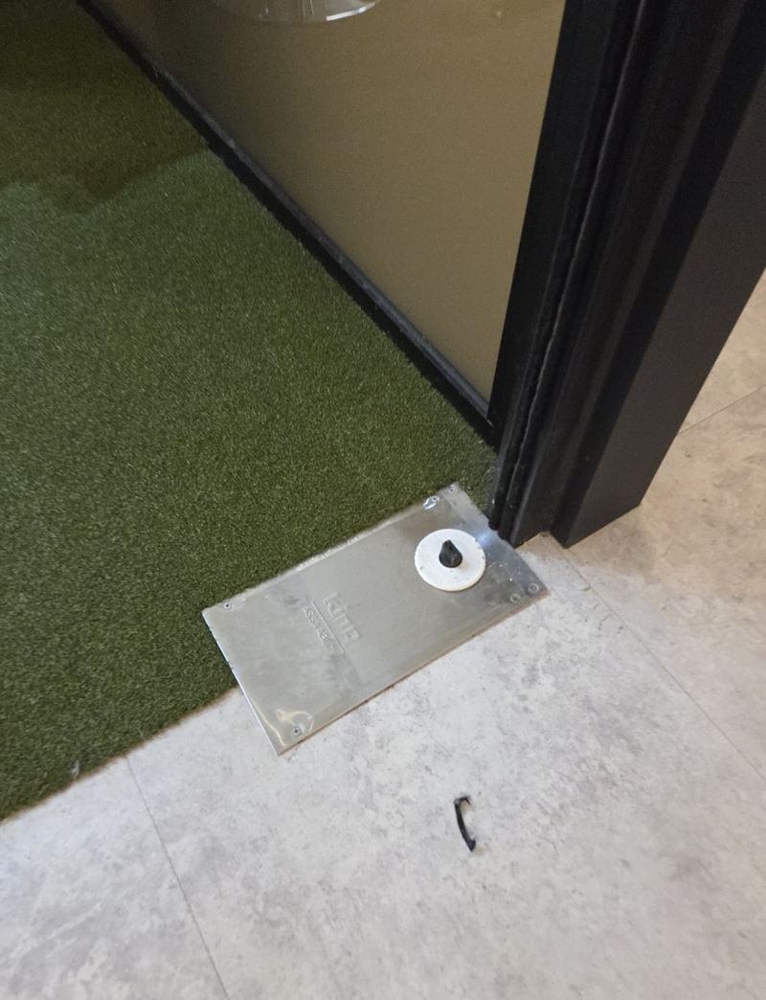
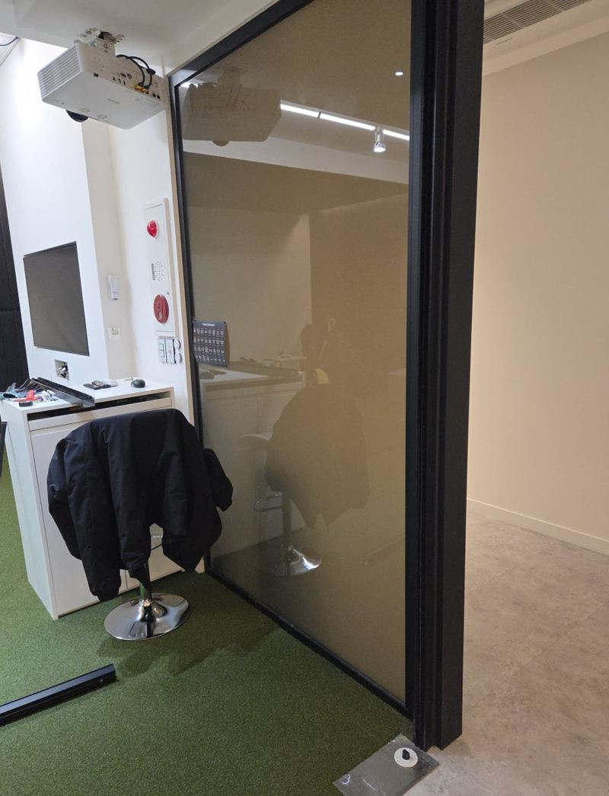

강남 프레임리스 유리 폴딩도어 철거 순서

 철거 전철거 후
철거 전철거 후← 밀어서 전후 비교 →
"허가 문제로 이 폴딩도어를 더 둘 수 없게 됐어요. 빨리 철거해야 해요." 대치동 빌딩 안에 공간을 나누던 유리 폴딩도어였어요. 테두리 프레임 없이 유리판끼리 접히는 구조에 전기까지 연결돼 있어, 아무 데부터 떼면 유리가 기울거나 전선이 상할 수 있었어요. 구조를 먼저 읽고, 전기 → 유리문 → 하부 고정 → 레일 순서로 하나씩 풀어 안전하게 철거했어요.
| 현장 | 서울 강남구 대치동 빌딩 내부 |
|---|---|
| 대상 | 프레임리스 유리 폴딩도어, 전기 연결 포함 |
| 이유 | 허가 문제로 유지 불가, 빠른 철거 요청 |
| 순서 | 구조 확인 → 전원 차단·배선 해체 → 유리문 한 장씩 분리 → 하부 고정 해체 → 상·하부 레일 제거 → 현장 정리 |
프레임 없는 폴딩도어가 더 까다로운 이유
일반 폴딩도어는 알루미늄 프레임이 유리를 감싸고 있어서 프레임째 들어내면 돼요. 프레임리스는 유리판이 경첩과 상·하부 부속으로만 이어져 있고, 유리 자체가 무게 일부를 나눠 받아요. 한 장을 잘못 빼면 옆 유리들이 한쪽으로 쏠릴 수 있어요.
폴딩도어는 설치한 업체마다 고정 방법과 무게를 나누는 방식이 달라요. 그래서 손을 대기 전에 어느 부속이 무엇을 붙잡고 있는지부터 확인하고 순서를 정했어요.


유리 폴딩도어 철거 순서
전원 차단과 배선 해체
전기로 움직이는 부분이 있어 전원을 먼저 내리고 배선을 풀었어요. 전기가 살아 있는 채로 떼면 감전 위험이 있고 부품도 상해요.

유리문 한 장씩 분리
통유리는 생각보다 무거워요. 한 번에 여러 장을 빼면 균형이 무너져 깨지거나 넘어질 수 있어서, 한 장씩 잡고 떼며 무게를 나눴어요.

하부 고정 해체
바닥 쪽 부속은 문 전체의 중심을 잡아 주던 곳이에요. 브라켓과 연결부를 하나씩 풀어 위쪽에 충격이 가지 않게 했어요.


레일 제거와 정리
마지막으로 상·하부 레일을 떼고, 남은 자재와 작은 유리 조각까지 확인하며 바닥을 정리했어요.
레일을 마지막에 떼는 이유
레일은 문을 매달고 받치는 뼈대예요. 유리가 남아 있는데 레일부터 떼면 남은 유리를 받쳐 줄 곳이 없어져 위험해져요. 모든 문과 부속을 빼낸 뒤 비어 있는 레일을 떼야 끝까지 안전하게 마무리돼요.
| 순서를 바꾸면 | 생길 수 있는 일 |
|---|---|
| 전기보다 유리를 먼저 | 감전, 모터·배선 손상 |
| 여러 장을 한꺼번에 | 유리 쏠림, 파손·낙하 |
| 레일을 먼저 | 남은 유리를 받칠 곳이 없어짐 |
고객분은 "급하게 철거해야 해서 걱정이 많았는데 일정 맞춰 진행해 주고, 전기 부분까지 깔끔하게 정리해 줘서 안심된다"고 하셨어요.
폴딩도어 철거 전 확인해 두면 좋은 것
- 철거 뒤 공간 쓰임그냥 비울지, 벽이나 다른 문을 세울지에 따라 레일 자리 정리 방법이 달라요.
- 유리를 남길지다시 쓸 생각이면 보관할 자리와 옮길 길을 미리 비워 두세요.
- 전원 위치폴딩도어에 들어가던 전기가 어디서 오는지, 차단기가 어디 있는지 알려주시면 빨라요.
- 건물 관리 규정빌딩은 작업 시간이나 엘리베이터 사용에 규칙이 있는 경우가 많아요.
폴딩도어 철거 질문
철거 후 천장·바닥 자국은 어떻게 되나요?
레일을 뗀 자리에 나사 구멍과 자국이 남아요. 메움이나 마감은 따로 상의해요.
떼어 낸 유리는 다시 쓸 수 있나요?
상태가 괜찮으면 보관할 수 있게 조심히 떼요. 재사용 여부는 미리 말씀해 주세요.
철거와 새 문 설치를 같이 할 수 있나요?
철거 후 다른 문을 다는 것도 가능해요. 원하는 문 형태를 함께 알려주세요.
영업 시간에도 작업하나요?
유리를 다루는 작업이라 사람이 적은 시간을 권해요. 일정은 상의해서 잡아요.
바깥쪽 폴딩도어도 철거하나요?
상가 전면 폴딩도어도 해요. 외부는 비·바람 막을 임시 조치도 함께 생각해야 해요.
전기 연결은 누가 정리하나요?
폴딩도어에 물린 배선은 철거하면서 풀고 끝을 안전하게 정리해요. 건물 쪽 전기 공사가 필요하면 범위를 따로 알려 드려요.
다른 폴딩도어 현장
폴딩도어 전체와 위·아래 부속 사진을 보내 주세요.
전화 상담 010-4517-9872